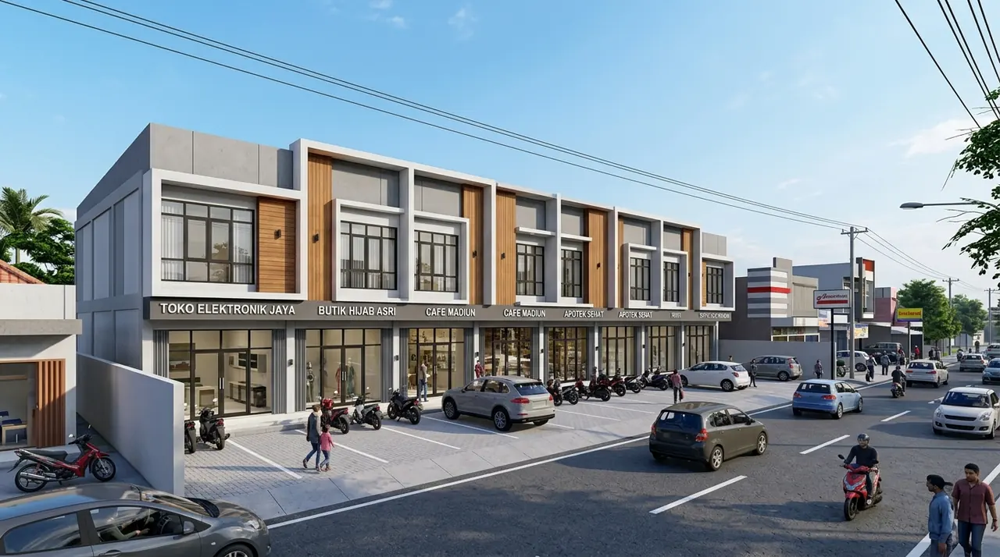

1. Faktor yang Mempengaruhi Biaya Bangun di Wilayah Madiun
Akses jalan kavling, pilihan pasangan bata merah versus bata ringan, serta spesifikasi rangka atap menentukan total nilai anggaran.
Penggunaan bata merah lokal Madiun memiliki kekokohan alami dan peredaman panas baik, sementara bata ringan memberikan kecepatan pasang dan kerataan plesteran acian yang lebih presisi.
Rangka atap baja ringan galvalum tebal 0.75 mm SNI dipadukan genteng beton flat atau genteng morando berglazur menjadi opsi paling digemari karena tahan gempa dan tidak dimakan rayap.
- Manfaatkan Kuari Lokal: Batu belah dan pasir kali dari kuari resmi Madiun selatan memiliki daya rekat sangat baik dan harga lebih murah.
- Modul Granit 60x60: Rancang dimensi ruangan dengan kelipatan 60 cm agar pemotongan keramik granit minimal dan nat keramik rapi simetris.
- Kunci Kontrak Awal: Pilih sistem borongan material penuh untuk mengunci risiko kenaikan harga besi atau semen selama pengerjaan proyek.
2. Simulasi RAB Rumah Tinggal Tipe 60 di Kota Madiun
Simulasi biaya pembangunan rumah 1 lantai tipe 60 m² siap huni di Madiun berkisar pada angka Rp 204 Juta.
Pekerjaan pondasi batu belah menyerap Rp 25,2 juta, struktur beton bertulang Rp 39 juta, dinding bata ringan dan plester aci Rp 29,7 juta, atap baja ringan dan genteng beton Rp 19,5 juta, plafon gypsum Rp 6,6 juta, lantai granit tile 60x60 Rp 20,4 juta, kusen aluminium pintu kayu Rp 18 juta, instalasi air dan sanitari Rp 16,5 juta, serta kelistrikan dan pengecatan Rp 21,6 juta.
Nilai tersebut menghasilkan biaya rata-rata Rp 3.400.000 per meter persegi dengan kualitas finishing prima dan bergaransi resmi.

Konstruksi ruko 2 lantai komersial berdaya tarik tinggi di jalur strategis perniagaan Madiun.
3. Tabel Estimasi Biaya Berdasarkan Tipe Rumah & Ruko di Madiun
Tabel panduan biaya per meter persegi untuk berbagai skala hunian dan ruko komersial di Madiun.
Tabel berikut merangkum estimasi anggaran biaya untuk rumah tinggal 1 lantai, rumah bertingkat 2 lantai, dan ruko perniagaan di Madiun.
| Tipe Properti di Madiun | Luas Bangunan Standar | Estimasi Biaya / m² | Total Estimasi Anggaran |
|---|---|---|---|
| Rumah Tinggal Tipe 45 (1 Lantai) | 45 m² | Rp 3.200.000 – Rp 3.600.000 | Rp 144.000.000 – Rp 162.000.000 |
| Rumah Tinggal Tipe 70 (1 Lantai) | 70 m² | Rp 3.300.000 – Rp 3.800.000 | Rp 231.000.000 – Rp 266.000.000 |
| Rumah Bertingkat Tipe 120 (2 Lt) | 120 m² | Rp 3.800.000 – Rp 4.500.000 | Rp 456.000.000 – Rp 540.000.000 |
| Ruko Komersial 2 Lantai (4 x 12 m) | 96 m² | Rp 3.400.000 – Rp 4.200.000 | Rp 326.400.000 – Rp 403.200.000 |
4. Tips Mengoptimalkan Biaya Bangun Rumah di Wilayah Madiun
Kunci penghematan ada pada keselarasan desain dengan modul material standar dan pemilihan paket kontrak borongan turnkey.
Dengan merancang ukuran ruangan yang selaras dengan kelipatan dimensi granit 60x60 cm dan modul gypsum, Anda dapat mengeliminasi sisa buangan material (waste material) yang tidak terpakai.
Pertanyaan yang Sering Diajukan (FAQ)
Kesimpulan Praktis
Membangun hunian atau ruko impian di Madiun kini lebih mudah dan terkontrol bersama Kontraktor Bangunan dengan efisiensi biaya maksimal.
Dapatkan draf RAB resmi dan rancangan denah awal secara gratis dengan menghubungi konsultan kami sekarang juga!